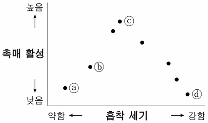

고체 촉매
지문을 먼저 읽고, 이해가 막히는 문단에서 ‘그림으로 보기’를 누르세요. 그림은 문단을 따라 바뀝니다.
1문단분자들이 만나 화학 반응을 진행하는 데 필요한 최소한의 운동 에너지를 활성화 에너지라 한다. 활성화 에너지가 작은 반응은, 반응의 활성화 에너지보다 큰 운동 에너지를 가진 분자들이 많아 반응이 빠르게 진행된다. 활성화 에너지를 조절하여 반응 속도에 변화를 주는 물질을 촉매라고 하며, 반응 속도를 빠르게 하는 능력을 촉매 활성이라 한다. 촉매는 촉매가 없을 때와는 활성화 에너지가 다른, 새로운 반응 경로를 제공한다. 화학 산업에서는 주로 고체 촉매가 이용되는데, 액체나 기체인 생성물을 촉매로부터 분리하는 별도의 공정이 필요 없기 때문이다. 고체 촉매는 대부분 활성 성분, 지지체, 증진제로 구성된다.
2문단활성 성분은 그 표면에 반응물을 흡착시켜 촉매 활성을 제공하는 물질이다. 고체 촉매의 촉매 작용에서는 반응물이 먼저 활성 성분의 표면에 화학 흡착되고, 흡착된 반응물이 표면에서 반응하여 생성물로 변환된 후, 생성물이 표면에서 탈착되는 과정을 거쳐 반응이 완결된다. 금속은 다양한 물질들이 표면에 흡착될 수 있어 여러 반응에서 활성 성분으로 사용된다. 예를 들면, 암모니아를 합성할 때 철을 활성 성분으로 사용하는데, 이때 반응물인 수소와 질소가 철의 표면에 흡착되어 각각 원자 상태로 분리된다. 흡착된 반응물은 전자를 금속 표면의 원자와 공유하여 안정화된다. 반응물의 흡착 세기는 금속의 종류에 따라 달라진다. 이때 흡착 세기가 적절해야 한다. 흡착이 약하면 흡착량이 적어 촉매 활성이 낮으며, 흡착이 너무 강하면 흡착된 반응물이 지나치게 안정화되어 표면에서의 반응이 느려지므로 촉매 활성이 낮다. 일반적으로 고체 촉매에서는 반응에 관여하는 표면의 활성 성분 원자가 많을수록 반응물의 흡착이 많아 촉매 활성이 높아진다.
3문단금속은 열적 안정성이 낮아, 화학 반응이 일어나는 고온에서 금속 원자들로 이루어진 작은 입자들이 서로 달라붙어 큰 입자를 이루게 되는데 이를 소결이라 한다. 입자가 소결되면 금속 활성 성분의 전체 표면적은 줄어든다. 이러한 문제를 해결하는 것이 지지체이다. 작은 금속 입자들을 표면적이 넓고 열적 안정성이 높은 지지체의 표면에 분산하면 소결로 인한 촉매 활성 저하가 억제된다. 따라서 소량의 금속으로도 ㉠금속을 활성 성분으로 사용하는 고체 촉매의 활성을 높일 수 있다.
4문단증진제는 촉매에 소량 포함되어 활성을 조절한다. 활성 성분의 표면 구조를 변화시켜 소결을 억제하기도 하고, 활성 성분의 전자 밀도를 변화시켜 흡착 세기를 조절하기도 한다. 고체 촉매는 활성 성분이 반드시 있어야 하지만 경우에 따라 증진제나 지지체를 포함하지 않기도 한다.
윗글을 바탕으로 할 때, <보기>의 금속 ⓐ～ⓓ에 대한 설명으로 가장 적절한 것은?
다음은 여러 가지 금속에 물질 가가 흡착될 때의 흡착 세기와 가의 화학 반응에서 각 금속의 촉매 활성을 나타낸다. (단, 흡착에 영향을 주는 다른 요소는 고려하지 않음.)
